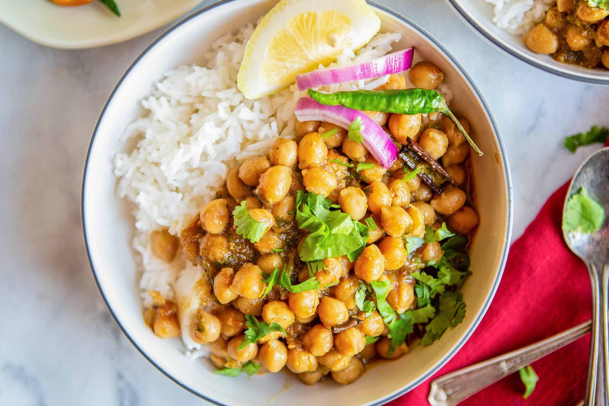

Home
Chana Masala

An exceptional homemade Indian recipe
Chana masala (also called chole masala) is a spicy north Indian dish of chickpeas in a tomato onion gravy that is best eaten with a naan, roti or rice. This delicious one pot chana masala recipe comes together in under 30 minutes. It is gluten-free, soy-free, nut-free and it can be oil-free.
Chana masala is relatively low in carbs--a serving has a total of 15 grams of net carbs. It would work very well for someone that is eating a reasonably low carb diet--under 100 net carbs a day --but might be difficult to squeeze into a very restrictive keto diet that requires you to restrict yourself to 25-50 net carbs a day.
Ingredients
- 1 tablespoon olive oil
- 1 large onion, chopped
- 2 cloves minced garlic
- 2 teaspoons grated fresh ginger
- 1 green chile pepper, chopped
- 1 tablespoon ground cumin
- 2 teaspoons paprika
- 1 teaspoon ground coriander
- 1 teaspoon garam masala
- 1 teaspoon ground turmeric
- ½ teaspoon ground cayenne pepper
- 4 cups chopped tomatoes
- 4 cups cooked chickpeas (garbanzo beans)
- ½ cup tomato sauce
- ½ cup plain yogurt
- 1 lemon, juiced
- ½ teaspoon salt
Steps
- Heat oil in a large saucepan over medium heat. Saute onion, garlic, ginger, and green chile pepper in hot oil until onions are translucent, about 10 minutes.
- Season onion mixture with cumin, paprika, coriander, garam masala, turmeric, and cayenne pepper; stir. Cook onion with spices until fragrant, 1 to 2 minutes. Add tomatoes, chickpeas, and tomato sauce; stir and simmer until the tomatoes soften, about 5 minutes.
- Stir yogurt into the mixture until the color of the mixture is even; simmer until again hot, about 5 minutes more. Remove pan from heat; stir lemon juice and salt into the mixture.
Back to Top